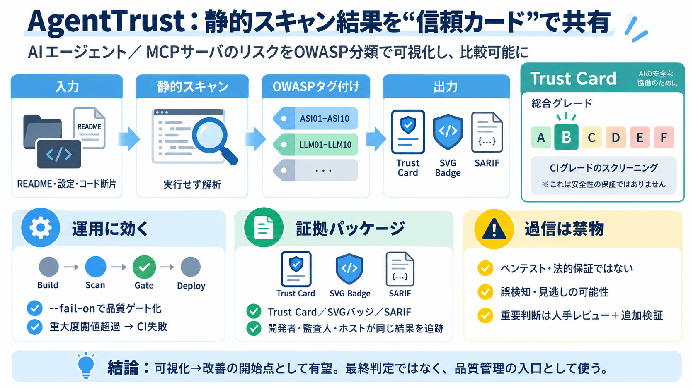

OWASP Top 10 for Agentic Applications (2026)
The OWASP Top 10 for Agentic Applications 2026 ranks ten security risks specific to agentic AI: planning, tool use, iden…

AIエージェント／MCPサーバを静的にスキャンし、OWASP対応の“Trust Card”として発行・共有するプラットフォームです（信頼を比較可能に）。
エージェント領域は運用・設定・接続先でリスクが変わり、セキュリティ状態を第三者が同じ基準で比較しにくい問題があります。
Trust Card（A–F）を、ペンテストではなく“CIグレードのスクリーニング結果”として配布し、状態を定規のように並べます。
GitHubリポジトリ相当の入力を手がかりに、ローカル実行の静的スキャン→OWASP分類タグ付け→Trust Card／SVG／SARIFを生成します。
検出結果をOWASPの脅威分類に機械的に対応させ、ASI01–ASI10／LLM01–LLM10として整理します。
--fail-on オプションで、重大度が閾値を満たすとビルド失敗にでき、セキュリティを品質管理に組み込みやすくします。
Trust CardとSVGバッジ、SARIFの“三層構造”により、開発者・監査人・ホストが同じ結果を辿れる導線を作ります。
README上では、Trust Cardはペンテストや法的判断ではなく、CIグレードの資格（スクリーニング）として区別されています。
attackは静的ヒューリスティックの再評価で実行ペイロードは扱わず、evalはシミュレーションとして検証スイートの妥当性を確認します。
入力データは“ゼロデータ保持／ローカル実行／テレメトリなし／アカウント不要”を主張しており、導入時の情報管理要件に配慮しています。
静的・ルールベースであるため網羅率に限界があり、Trust Cardは“安心の証明”ではなく“起点の品質管理”として扱う必要があります。
AgentTrustは、静的スクリーニングの結果をOWASP分類・Trust Card・SARIFで“比較可能”にし、セキュリティ品質管理の入口として有望です。
The OWASP Top 10 for Agentic Applications 2026 ranks ten security risks specific to agentic AI: planning, tool use, iden…
The OWASP Top 10 for Agentic Applications 2026, published December 9, 2025, catalogs ten risk categories (ASI01 through …
Most confusion in this field comes from blending two separate OWASP documents. Both are products of the OWASP Gen AI Sec…
: Article 50(1) requires that natural persons are informed that they are interacting with an AI system unless this is …
# OWASP Top 10 for Agentic Applications The OWASP Top 10 for Agentic Applications was announced during Black Hat Europe…